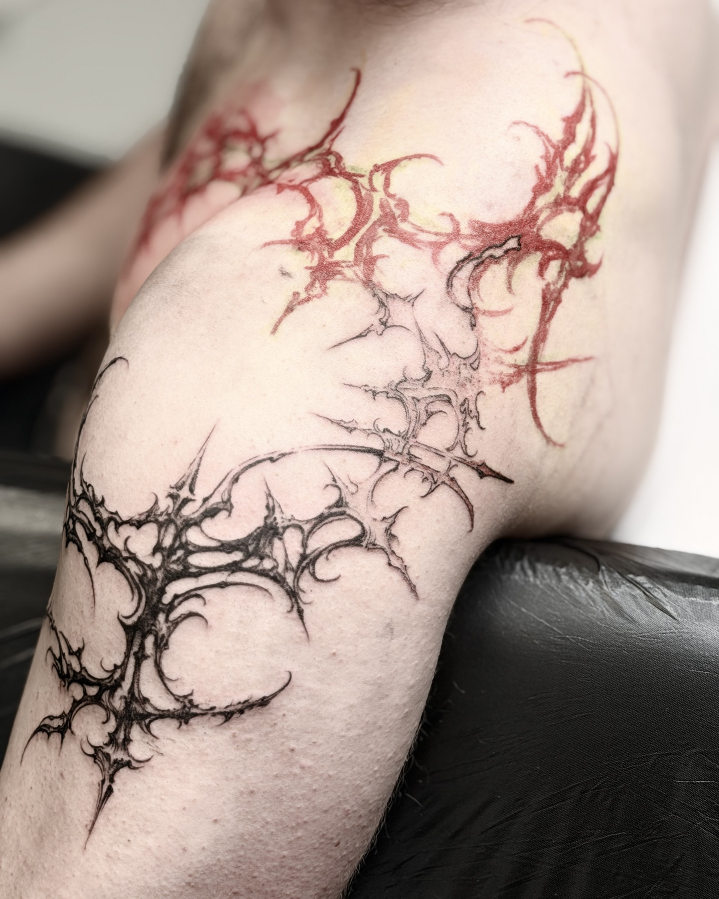
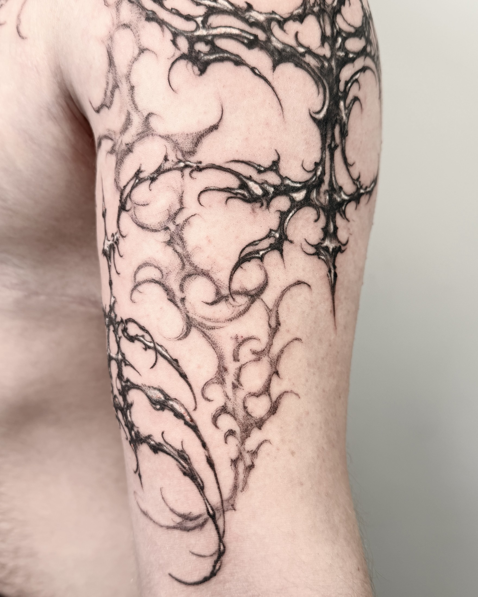
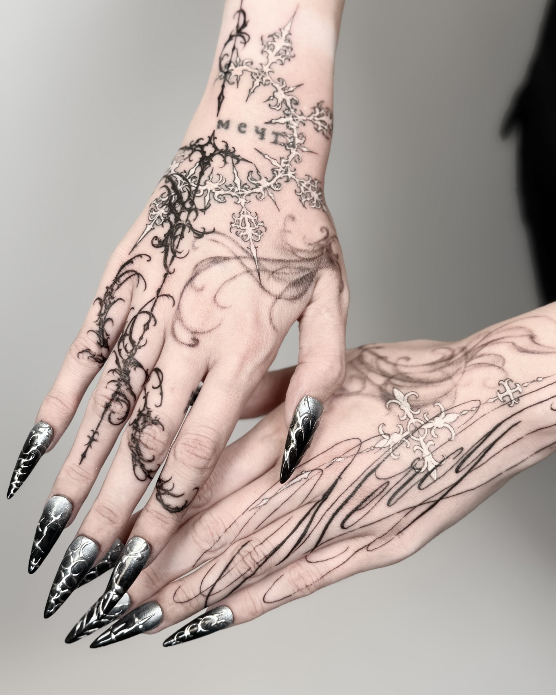
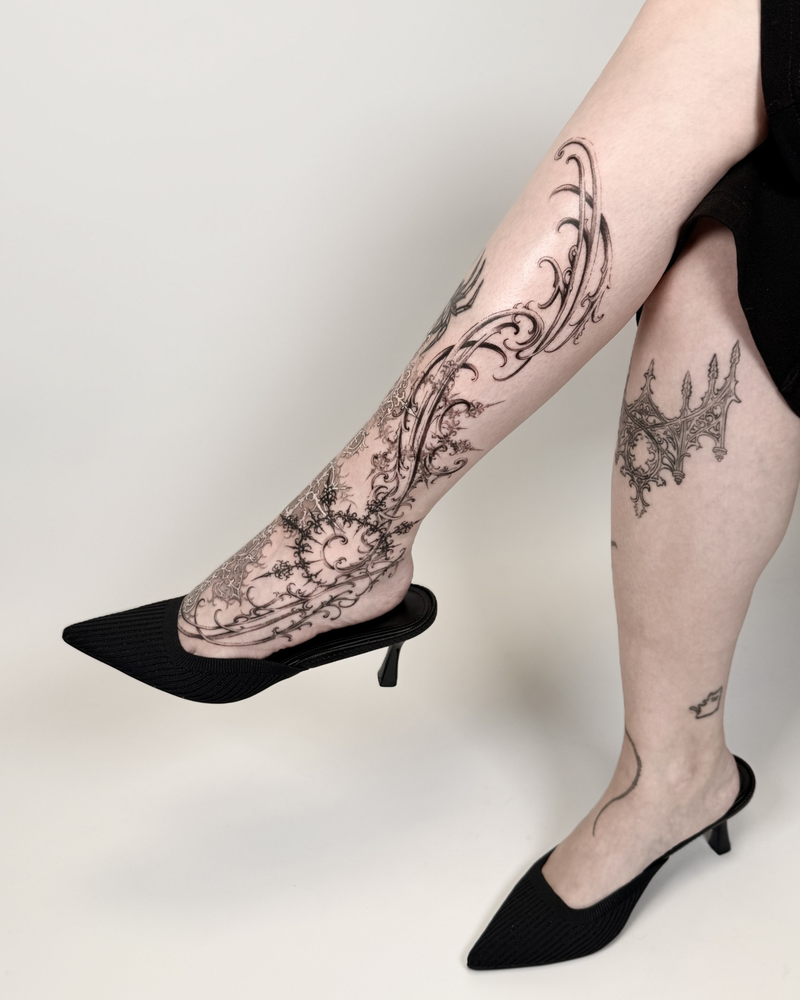
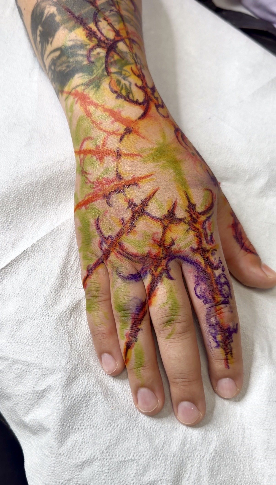
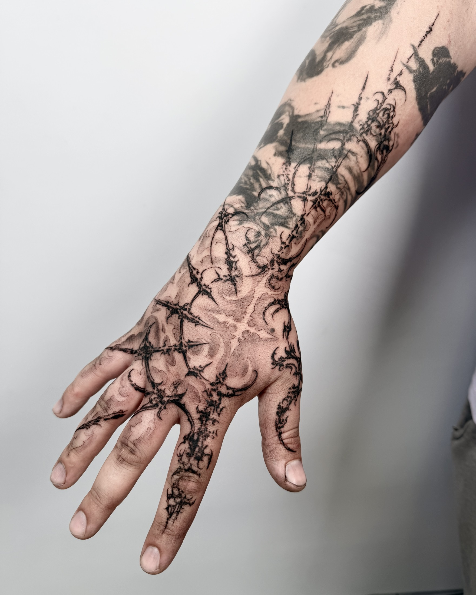

The body guides the line
Bold black shapes, delicate lines and compositions that follow the anatomy. Artist anzeigeohnegrund of Glocks and Flowers in Münster discusses drawing directly on the skin, developing a visual language and trusting his own ideas.

“Precision without losing the natural flow of the piece.”Tattoo by anzeigeohnegrund
Glocks and Flowers
Answers provided by the artist for TATU TUT. Topic headings added by the editorial team.
In this interview
Finding tattooing
Without realizing it, I had been preparing for this career from an early age. I started drawing very young and have always loved working with my hands. When I first discovered tattooing, I knew it brought together everything I was passionate about. It was immediately clear to me that this was what I wanted to build my life around.
A name for the style
Cybersigilism is an umbrella term often used to describe these forms. My own style combines elements from various styles, but I use the term because it helps people understand and place my work.
Contrast and depth
I like working with strong contrast and shading to give the shapes depth and a slightly realistic touch. I think that’s what creates the effect you’re describing.
Anatomy and movement
Over the years, I’ve spent a lot of time studying human anatomy and the way muscles flow through the body. I find it most visually appealing when a design mainly follows those lines, with a few deliberate breaks, so that it flows naturally with the body as it moves. I often enjoy working freehand, adapting the design directly to the shape of the muscles. But even when I draw a design on my iPad and apply it as a stencil, I always keep that anatomy and movement in mind.


From blackwork to fine lines
It wasn’t one particular project, but a gradual evolution. My earlier blackwork relied heavily on solid black areas. Over time, my love for fine, clean lines became part of that approach. I still want to keep those bold black elements, but combine them with more delicate linework. Other artists have inspired me along the way, while I’ve continued to develop my own visual language.
Freehand and sketches
I enjoy both approaches. For larger projects where a single design flows across several parts of the body, I especially like working freehand. In the future, I’d like to focus primarily on that process. Sometimes I’ll sketch a rough version on my iPad first and keep it beside me as a reference while drawing directly on the skin.
A studio and its local scene
My studio and the artists on my team are quite alternative compared to much of the local tattoo scene. Münster is a university city with a lot of young people, but in my experience, the local tattoo scene is more traditionally oriented. Being in that environment made me realise I wanted to create space for the kind of tattooing that personally excites me. As a team, we’re exploring a more contemporary direction and opening up room for different approaches. We respect traditional tattooing and see our work as adding another branch to the local scene.
The most personal pieces
It’s difficult to choose just one, because every piece has helped me develop my own style. But my recent hand and foot tattoos stand out to me. They feel the closest to my own visual identity, and seeing people respond so positively to them online has meant a lot.
With those projects, I made a conscious decision to trust my own ideas and bring something to life that had previously only existed in my head. They combine influences from different styles I’ve grown to love over the years. I’m particularly drawn to the layered effect, where elements appear to overlap like a blast-over tattoo. That interplay captures a lot of what I love about tattooing, and these pieces feel especially personal because of it.


Darkness and elegance
I’ve always been drawn to darker aesthetics, whether in fashion, illustration, or tattooing. Strong contrast is a big part of that, but what interests me most is combining that darkness with something delicate and elegant. That’s what draws me to this mix: bold, sharp forms alongside intricate ornamentation. There’s a tension between the two, almost like a balance between good and evil, that runs through a lot of my work.
Technical challenges
The biggest technical challenge is keeping the fine details clean while making sure the tattoo still reads clearly from a distance. Up close, I want people to discover the smaller details, but from further away, it should still hold together as a strong shape that flows with the body.
When I work with a stencil, one practical challenge is keeping those tiny details visible as I work. I usually tattoo the finer elements first, before the stencil fades or gets wiped away, and then move on to the bolder sections. I also leave room to adjust or develop elements directly on the skin. For me, it’s about precision without losing the natural flow of the piece.


AI and an artistic voice
AI doesn’t particularly worry me. For me, the most meaningful part of creating art comes from human imagination and personal experience. I can see AI being useful as a practical tool, especially for tasks that are less creatively engaging, and I’m open to that.
But I wouldn’t want to rely on it to define my artistic direction. These systems learn from existing work, and my concern is that relying on them too much could bring me closer to someone else’s visual language rather than helping me develop my own. I want the ideas behind my tattoos to come from me and to contribute something personal.
Finding your own visual language
Start by looking inward. Pay attention to what draws you in—not just in art, but in people, experiences, and everything you’ve connected with over the years. Ask yourself what those influences mean to you and what they reveal about who you are.
Everyone takes inspiration from somewhere. Finding your own visual language comes from processing those influences through your own personality, rather than simply reproducing them. Bring them together, experiment, and let your own perspective shape the result. I think that’s how something personal emerges: a way of seeing and expressing things that only you could arrive at.
The artist’s vocabulary
Freehand means drawing directly on the skin. A stencil transfers the design’s outline onto the skin. The artist’s comparison to a blast-over describes a layered effect; it does not establish that the pieces shown cover older tattoos.